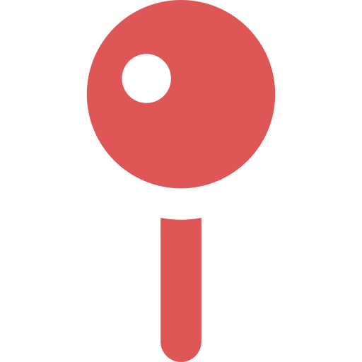

Access

Studio EUNO
 서울특별시 노원구 하령로 32길 7
Tell:+82-2-123-4567
영업시간: 월~일 10:00~19:00
ソウル特別市 ノウォン区 ハリョン路32キル 7
Tell:+82-2-123-4567
営業時間: 月～日 10:00～19:00
7, Haryeong-ro 32-gil, Nowon-gu, Seoul, Republic of Korea
Tell:+82-2-123-4567
Open:MON–SUN 10:00 AM–7:00 PM
市バス ： 나리천（Naricheon） 下車 徒歩1分
地下鉄 ： 성암역駅（Seongam Station） 下車 徒歩8分
高速バス ： 대원터미널（Daewon Terminal） 下車 徒歩10分